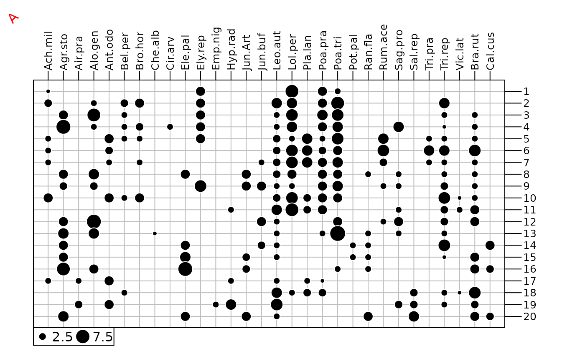

Adds labels on graphics.
addtext.RdAdds a trellis object containing one or several labels on one or several graphical objects.
Arguments
- object
an object of class
ADEg,trellisorADEgS- xcoord
an integer (or a vector) indicating where
labelis(are) plotted on the x-axis, passed to theadeg.panel.label- ycoord
an integer (or a vector) indicating where
labelis(are) plotted on the y-axis, passed to theadeg.panel.label- label
a character string (or a vector) containing the label(s) displayed on
object- plot
a logical indicating if the graphics is displayed
- ...
Other arguments. Additional graphical parameters (see the
plabelslist inadegparandtrellis.par.get). Ifobjectis anADEgS, the argumentwhichidentify whichADEgis/are used for superposition.
Author
Aurelie Siberchicot aurelie.siberchicot@univ-lyon1.fr and Stephane Dray
Examples
data(dunedata, package = "ade4")
afc1 <- ade4::dudi.coa(dunedata$veg, scannf = FALSE)
g1 <- table.value(dunedata$veg, symbol = "circle", ppoints.cex = 0.5, plot = FALSE)
addtext(g1, 1, 20, "A", plabels.srt = 45, plabels.box.draw = FALSE, plabels.col = "red")

xy <- cbind.data.frame(x = runif(200, -1, 1), y = runif(200, -1, 1))
posi <- factor(xy$x > 0) : factor(xy$y > 0)
g2 <- s.class(xy, fac = posi, facets = posi, pellipses.col = 1:4, plabels.cex = 0,
plegend.drawKey = FALSE, psub.cex = 0, plot = FALSE)
#> Error in multi.facets.S2(thecall, sortparameters$adepar, samelimits = sortparameters$g.args$samelimits): object 'xy' not found
addtext(g2, c(0.5, 0.5, -0.5, -0.5), c(0.5, -0.5), levels(posi), plabels.cex = 2, plabels.col = 1:4)
#> Error in h(simpleError(msg, call)): error in evaluating the argument 'object' in selecting a method for function 'addtext': object 'g2' not found